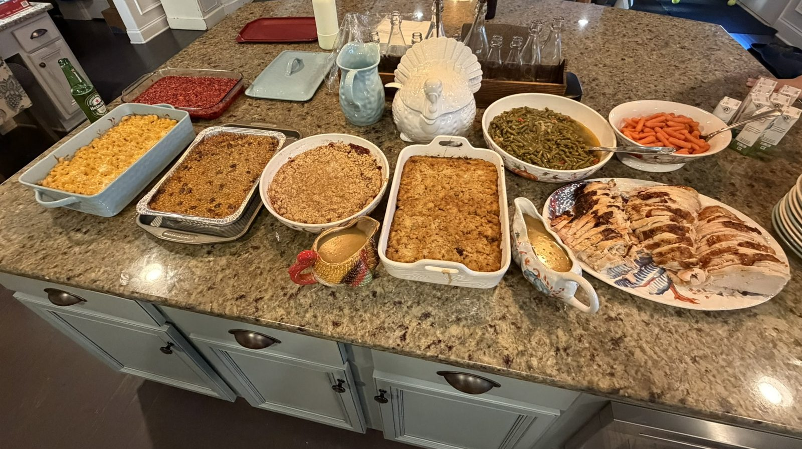

Back to the playbook
Fruit compote
Oven at 3:00 PM, 350°F, 45 minutes · 8 servings · Prep 15 min · Cook 45 min

Ingredients
- 3 Granny Smith apples
- 1 can whole cranberry sauce
- 1 cup quick oats
- ⅓ cup brown sugar
- ⅓ cup white sugar
- ⅓ cup all-purpose flour
- 1 stick butter
Instructions
- Stir the apples and cranberry sauce together and pour into a large casserole.
- Mix the oats, sugars, and flour until crumbly. Gradually work in the butter.
- Spread the topping evenly over the apple-cranberry mix.
- Bake at 350°F for 45 minutes.